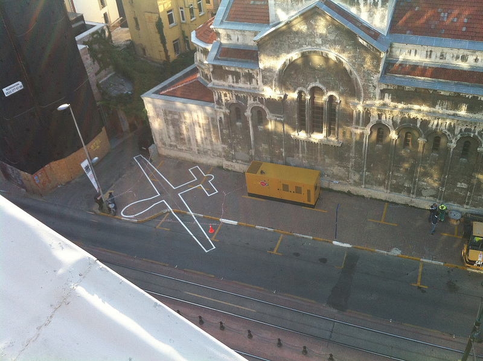

Origin of web-art practice through the evolution of internet

Web:
A constant evolution/ The first version of internet was developped by scientist Tim Berners-Lee in 1989. This technology was used by the army and quickly got viral in the accademic world. It is only in 1991 when Internet became accessible to the public as a service. Since its inception, many evolution occured and as we know it, it affected the world in general but the goal of this page is to take glance on how it afected the art world.
"Social media is to the read/write web that sprawl is to the metropolis of modernity, a homogenous, cancerous, rhizomatic junkspace that expands exponentially outward on a sludgy wave of strip malls and sponsored links, greed and induced demand" - Jesse Darling
Web Art:
Art that require coding skills. An art that museums failed to integrate in gallery spaces in the first place. Most of the net.art represented in real life involved uncomfortable interactive artworks with computers, which ended up being used only to check emails instead of experiencing the work itself. As Olia lialina said in her essay All you need is Link: "Net art exhibitions are the ugliest phenomenon of the modern art scene."
Weird in-between period:
During the early 2000s, an important variety of works laid the basis of what came to be a post-internet boom. Two of the most notable examples were the work of Cory Arcangel and Seth Price. While Ancangel was paving the way of a new conceptual way of dealing with historicity and specificity of internet as a medium inside and outsite the computer, Price writing would be proven a crucial theorical anchor for a new generation of artists. In his famous text Dispersion, he underline how artists might exist outside the limits of the art world. He then quote the philosopher Sarat Marajah, who sees the question as "a marker for ways we might be able to engage with works, events, spasms, ructions that don't look like art and don't count as art but are somehow electric, energy nodes, attractors, transmitters, conductors of new thinking, new subjectivity and action that visual artwork in the traditional sense is not able to articulate."
Post Internet Art:
1 - "The term “post-internet” was first used by Marisa Olson in 2008, which, although not long ago on an art historical scale, is ancient history in terms of the evolution of the internet. In retrospect, she was speaking when Web 2.0 was only in its incipient stages." - Roman Road Journal available here She "meant to refer to art that a) couldn’t / wouldn’t exist before the internet (technologically, phenomenologically, existentially) and b) was in the “style” of or “under the influence” of the internet in some way.” - Marisa Olson refered to in the same article 2 - Art made in the wake of spending time surfing the internet. - Marisa Olso refered In Art in the age of the internet - No ghost just a shell, page 15, respini. 3 - A new poststudio paradigm appears. In his essay Next-level spleen, John Kelsey recites a new and widely accepted mantra that now, "the laptop and phone have already supplanted the studio as primary site of production." While it is true that not everyone have access to such device, the massive proliferation of gesture from them at least affect indirectly almost everyone. Commercialized spaces now dominate the once utopian cyberspace, which seems already more like a distant dream than an recent historical event. Junkspace and junktime are creeping in from everywhere as pockets of resistance and emancipations still rise from this complex environment. Having this in mind, it is interesting to ask how artist are existing whitin huge networked structures. Joel Holmberg's Legendary Account is one example of this questionning, where the artist relentlessly asked many things about being an artist on Yahoo! Answers. As of today, no easy answer to the riddles posed a decade a go by "Dispersion" have been fully answered.
The New Aesthetic:
The New Aesthetic is a term, coined by James Bridle, used to refer to the increasing appearance of the visual language of digital technology and the Internet in the physical world, and the blending of virtual and physical. Bridle, James. “The New Aesthetic and Its Politics.” Booktwo.org.com (blog), June 12, 2013. available here.
The New Aesthetic is a native product of modern network culture. An open-source, shareable concept, crowdsource, is made by many small pieces loosely joined. It can be work, a conversation, a performance, an experiment and more. It comments issues around computation, as we live in a society define and shaped by technology. Technology is political like everything else and we should be concerned of these, better controlling them before being controlled by them. It is a contemporary movement according to Bruce Sterling, he believes that New Aesthetic is the truth.
“There truly are many forms of imagery nowadays that are modern, and unique to this period. We’re surrounded by systems, devices and machineries generating heaps of raw graphic novelty. We built them, we programmed them, we set them loose for a variety of motives, but they do some unexpected and provocative things. Bridle’s collection of this material is huge. The evidence is impossible to refute. Anybody with a spark of perception who looks through [his Tumblr recognizes] that modernity reality is on display there.” P.114
This is still evolving, we are living the moment, constantly changing, new trends, new platforms are going to be invented and we will embrace it in some ways for the better and the worse. The physical reality is blurred into the intangible digital realm. Plato’s Cave or The Matrix could be an outcome of bad use of technology.
 James Bridle, Drone Shadow 002, 2012 Chalk drawing of a shape of a drone (surveillance monitoring vehicle that circulates in the sky)., 1:1 scale. Here the invisible becomes visible, any citizen that passes in this environment, might realize that they could potentially be monitored by a drone. More about the project here
 DINA KELBERMAN - Saskatchewan, Animated GIF
DINA KELBERMAN - Saskatchewan, Animated GIF Dinkle Berry - I am a watermelon
Dinkle Berry - I am a watermelon Dangereux, 2010Jonathan Savard
Dangereux, 2010Jonathan Savard